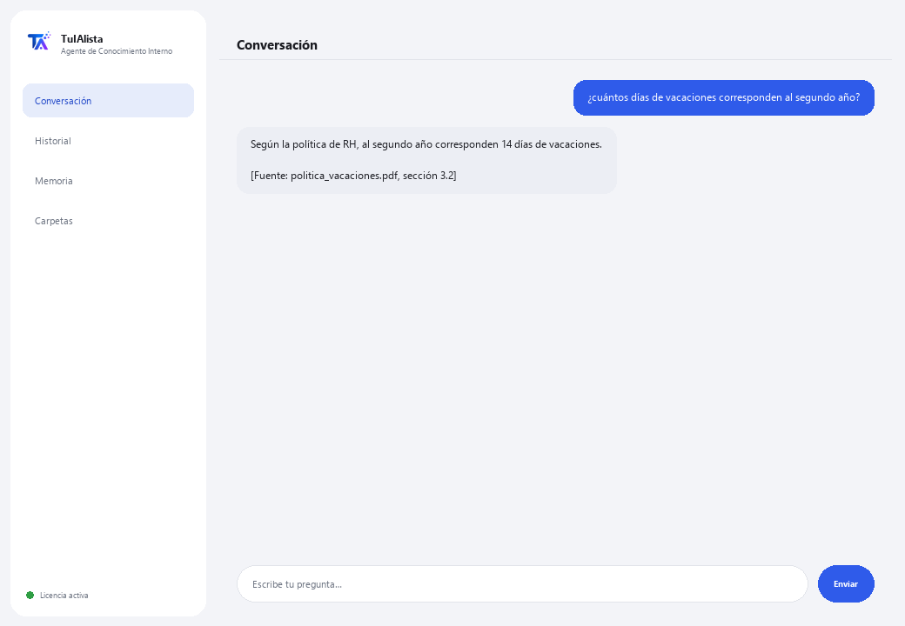

Agente de Conocimiento Interno
Convierte todos los documentos de tu empresa en una base de conocimiento que responde preguntas citando la fuente.
¿Qué resuelve y qué necesitas?
En toda empresa el conocimiento está disperso: políticas en un PDF, procesos en un Word, precios en un Excel, la inducción en un PowerPoint. La respuesta a “cuántos días de vacaciones me tocan” existe, pero nadie sabe en qué archivo. Este agente indexa todo y responde citando exactamente de dónde salió cada dato.
- Necesitas: tu clave de licencia (TIA-XXXX-XXXX-XXXX-XXXX) y la carpeta con los documentos internos. Nada de Python ni conocimientos técnicos.
- Primer resultado en menos de 5 minutos: instalas, activas, eliges tu carpeta y preguntas directamente lo que necesites saber.
- El conocimiento de tu empresa nunca sale de tu computadora — el índice se construye y consulta localmente.
soporte@tuialista.com o entra a tuialista.com/soporte — normalmente respondemos el mismo día hábil.1 Qué hace este agente
Tú le señalas la carpeta con los documentos internos y el agente:
- Los indexa todos (PDF, Word, Excel, CSV, PowerPoint, texto, Markdown) en una base local.
- Divide cada documento en fragmentos para encontrar la parte exacta que responde.
- Responde preguntas de tu equipo usando solo esos documentos, y siempre cita de dónde salió cada dato ([Fuente: archivo, sección]).
- Resume un tema consolidando lo que dicen varios documentos.
- Detecta huecos de conocimiento: temas que se mencionan mucho pero no tienen un documento dedicado.
- Arma un directorio de responsables: quién aparece como encargado de qué.
Lo esencial: si la respuesta no está en los documentos, el agente lo dice en vez de inventar.
2 Instalación (2 minutos)
Para Windows. No hace falta internet permanente ni subir nada a la nube.
Baja el instalador desde tuialista.com/descargar (agente Conocimiento) y ábrelo. Crea un acceso directo en tu escritorio con el logo — no requiere Python ni terminal.
Doble clic al ícono nuevo. Pega tu clave de licencia (te llegó por correo al comprar) y pulsa Activar. Verás una palomita verde cuando sea válida.
Selecciona la carpeta con tus documentos internos y pulsa Comenzar a usar el agente. La próxima vez arranca directo — recuerda tu clave y tu carpeta.
3 Cómo usarlo
El agente abre una ventana de chat, como una app de mensajería — no es una pantalla negra de programador. Su uso principal es preguntar directamente en el cuadro de texto, y también tiene algunos comandos de exploración:

> ¿pregunta libre?El uso principal. Escribe tu pregunta tal cual, ej.: ¿cuántos días de vacaciones corresponden al segundo año? — el agente busca en los documentos y responde citando la fuente. Si la información no está, te lo dice en vez de inventar.
> temasLista las categorías/áreas que cubren tus documentos (políticas, procesos, seguridad, RH, finanzas...) y en cuántos archivos aparece cada una.
> resumen <tema>Junta lo que dicen varios documentos sobre un tema y arma un resumen ejecutivo, señalando contradicciones si las hay. Ej.: resumen vacaciones.
> huecosTemas que se mencionan bastante pero no tienen un documento propio — útil para saber qué políticas conviene escribir.
> directorioNombres de personas que aparecen como responsables/encargados/contactos y en qué documentos.
> analizar <archivo>Líneas, número de fragmentos y una vista previa de un documento indexado.
> salirTermina la sesión (también funciona exit).
4 Ejemplos de uso común
Resolver una duda del equipo
¿cuál es el procedimiento para solicitar una compra mayor a $10,000? — respuesta con la cita del documento y la sección exactos.
Preparar un resumen para inducción
resumen seguridad
Auditar la documentación
temas → huecos — ves qué áreas están bien cubiertas y cuáles casi no tienen documentación.
Encontrar al responsable
directorio
5 Preguntas frecuentes
¿Los documentos de mi empresa se suben a internet?
¿Qué formatos acepta?
¿De verdad cita la fuente?
¿Qué pasa si la respuesta no está en los documentos?
¿Qué hace si dos documentos se contradicen?
Agregué documentos nuevos, ¿los toma?
¿Cómo elige qué fragmentos usar?
¿Lee un PDF escaneado?
¿En qué idioma responde?
¿Modifica mis documentos?
6 Solución de problemas
No indexa un .pdf, .docx, .xlsx o .pptx
Dice “0 documentos indexados”
Una respuesta cita un documento equivocado
Dice “Licencia no válida” o pide reconectar
“No hay proveedores de IA configurados”
¿Ninguna de estas soluciones resolvió tu problema? Escríbenos directamente — con gusto lo revisamos contigo.
soporte@tuialista.com o entra a tuialista.com/soporte — normalmente respondemos el mismo día hábil.7 Privacidad y confidencialidad
El conocimiento de tu empresa nunca sale de tu computadora.
- El agente lee, divide en fragmentos e indexa los documentos localmente, en tu propio equipo. No los sube a ningún servidor.
- Las búsquedas, los temas, los huecos y el directorio se calculan en tu máquina.
- Lo único que viaja por internet es: (1) una comprobación de que tu licencia está activa — que no incluye tus documentos —, y (2) al responder una pregunta o generar un resumen, se envían los fragmentos más relevantes al motor de IA para redactar la respuesta. El resto del conocimiento permanece local.